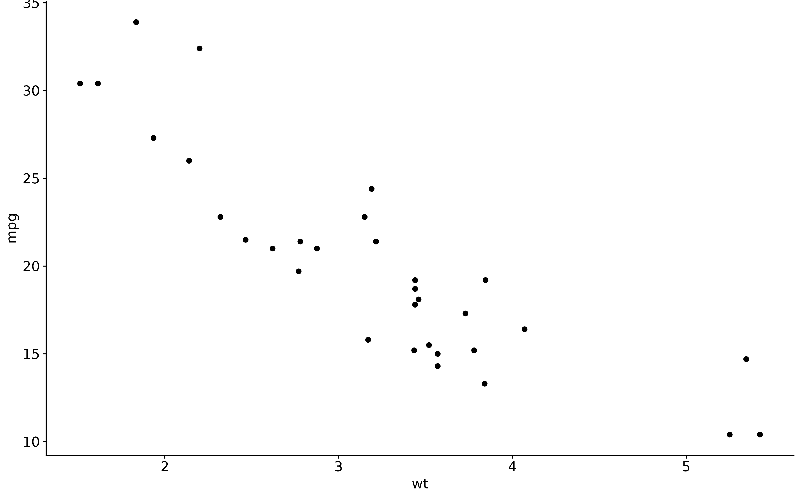

Same type and weight as theme_omakase(), but with a visible x axis and y
axis. Use it when a panel is being read quantitatively - a coverage track
whose depth matters, or a standalone plot outside a sashimi stack.
Usage
theme_omakase_axes(
base_size = 9,
base_family = "",
hairline = 0.3,
margin = c(1, 4, 1, 4),
legend = "none",
grid = FALSE
)Arguments
- base_size
Base font size in points. Everything else is expressed relative to it.
- base_family
Font family. The empty string uses the device default.
- hairline
Line width for the axis rules.
- margin
Plot margin in points, given as a length-4 numeric in the order top, right, bottom, left.
- legend
Legend position;
"none"by default.- grid
Whether to draw a light horizontal grid.
Value
A ggplot2::theme() object.
Examples
library(ggplot2)
ggplot(mtcars, aes(wt, mpg)) + geom_point() + theme_omakase_axes()
